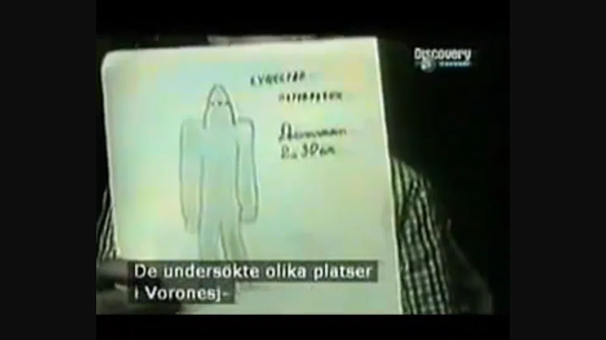

Description
On the evening of 27 September 1989, residents of the city of Voronezh in southwestern Russia reported observing a large, disc-shaped craft descending and briefly hovering low over a park in the city. The event was witnessed by multiple people in the area, including several children.
According to the accounts gathered by local journalists and later by Soviet scientific investigators, the craft was a dark, roughly saucer-shaped object around 30 to 40 metres in diameter, with a row of illuminated windows or ports along its side. It descended to a height of about 10 to 15 metres above the ground. Shortly afterward, a hatch or opening appeared and two or more small humanoid beings emerged. The beings were described as around 2 to 3 metres tall (accounts vary), with very small heads relative to their bodies, and dressed in dark, close-fitting garments.
Witnesses reported that the beings walked briefly in the area before returning to the craft, which then ascended and departed. Some witnesses reported a strange "humming" or "vibrating" sensation during the event. Others claimed to have seen the beings use a device that projected a beam of light onto the ground.
The case attracted significant attention within the Soviet Union. The state news agency TASS reported on the incident, and a formal scientific investigation was conducted by researchers from the Soviet Academy of Sciences. The investigation documented the accounts of numerous witnesses and concluded that the event could not be easily dismissed as misidentification, though no conclusive physical evidence was recovered from the site.
The Voronezh case is one of the very small number of UAP incidents in which a state news agency of a major power reported the event and confirmed that a formal government investigation had been opened. It is widely cited as one of the most important UAP events of the late Soviet period.
Video Documentation
Voronezh UFO Landing and Giant Aliens — 27 September 1989
Documentary segment covering the Voronezh landing and the eyewitness testimony gathered in the aftermath. Hosted on Dailymotion; clicking the button below will open it in a new tab.
Source Material

Reconstruction of the Voronezh landing, showing a sketch of the being drawn from witness accounts. Still from a Discovery Channel broadcast.
This case remains under investigation. If you hold additional documentation or testimony relating to the Voronezh incident, please contact us via the Report a UAP form.
Further reading: TASS news agency reports, September–October 1989; investigations published by the Soviet Academy of Sciences and by researchers including Jacques Vallée.